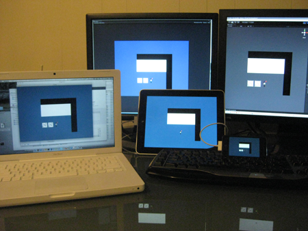
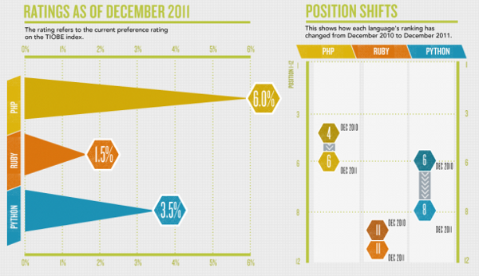

¿Por qué python en una startup?
Presenter Notes
Ventajas
Presenter Notes
Open Source
Presenter Notes
GPL compatible
Cross OS
Presenter Notes
Multiplataform

Presenter Notes
web, escritorio, móvil, embebido
Mitos
Presenter Notes
Pocos python-developers
Presenter Notes
No se necesitan python-developers se necesitan developers
Startups más resilientes a cambios de desarrolladores
Ruby (Rails) es más cool

Presenter Notes
Más que ruby
Ruby está estancado
Hosting sólo para php
Presenter Notes
Table of Contents
Table of Contents
¿Por qué python en una startup?
1
Ventajas
2
Open Source
3
Cross OS
4
Multiplataform
5
Mitos
6
Pocos python-developers
7
Ruby (Rails) es más cool
8
Hosting sólo para php
9
Help
Help
Table of Contents
t
Exposé
ESC
Full screen slides
e
Presenter View
p
Source Files
s
Slide Numbers
n
Toggle screen blanking
b
Show/hide slide context
c
Notes
2
Help
h